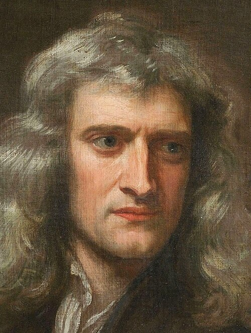
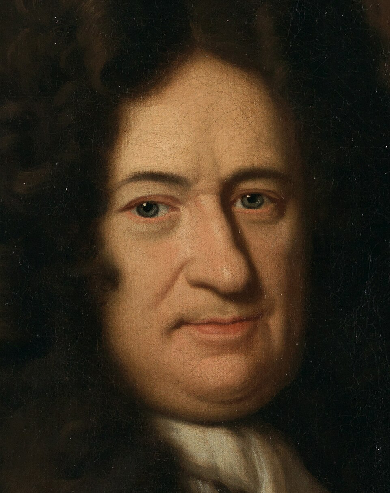
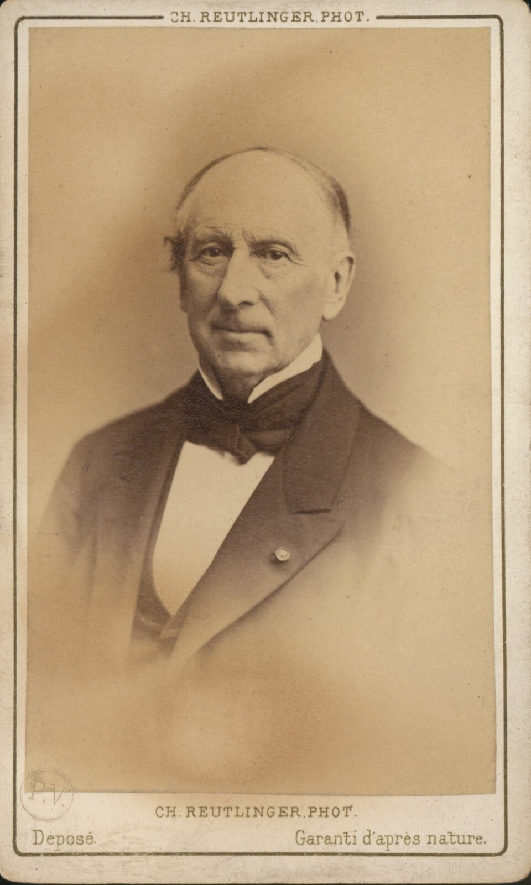
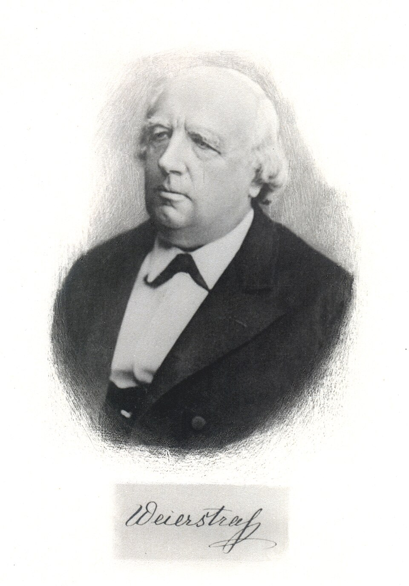

Hello dear reader, and thank you for taking the time to explore what might seem, at first glance, like a rather peculiar mathematical claim. After all, how complicated could a number like 0.999… really be? It looks simple, almost harmless, and yet it has managed to confuse, intrigue, and even frustrate countless students over the years.
Let us begin with the statement itself: 0.999… equals 1.
If your immediate reaction is disbelief, you are in good company. The idea appears to contradict a deeply rooted intuition, that a number which is consistently less than 1 should never suddenly become equal to it. After all, 0.9 is less than 1, 0.99 is less than 1, and even 0.999 still feels just slightly smaller. No matter how many 9s we add, it seems as though we are merely creeping closer to 1 without ever quite arriving there.
This creates what feels like a paradox. How can an infinite process, which never “finishes,” produce a result that is exact and complete? Is mathematics playing a trick on us, or is there something deeper happening beneath the surface?
In this essay, we will explore this question from multiple perspectives: algebraic, geometric, and historical. Along the way, we will encounter ideas that played a crucial role in the development of modern mathematics, particularly the concept of limits. By the end, we will see that what initially appears to be a contradiction is, in fact, a beautiful demonstration of mathematical consistency.
Before attempting to prove anything, it is essential to understand what we mean by the notation 0.999… . The three dots, known as an ellipsis, indicate that the digit 9 repeats infinitely. This is not a shorthand for “a very large number of 9s,” but rather a precise way of describing an infinite decimal expansion.
One helpful way to interpret this number is to express it as a sum:
Each term is one tenth of the previous one, forming what is known as an infinite geometric series. This type of series has been studied for centuries and played an important role in the development of calculus. Mathematicians such as Isaac Newton explored infinite expansions in their work, while later figures like Augustin-Louis Cauchy established rigorous criteria for when such series converge to a finite value.
For a geometric series with first term \(a\) and common ratio \(r\) (where \(|r| < 1\)), the sum of infinitely many terms is given by:
In this case, the first term is 0.9 and the ratio is 0.1. Substituting these values, we obtain:
This shows that the infinite sum represented by 0.999… is exactly equal to 1. It does not merely approach 1—it reaches it in a precise mathematical sense.
While the geometric series approach is insightful, there is another method that is perhaps even more striking in its simplicity.
Let us define a variable, \(x = 0.999\ldots\) Multiplying both sides by 10 gives \(10x = 9.999\ldots\) Notice that the repeating decimal portion remains unchanged. This allows us to subtract the original equation from this new one, leaving \(9x = 9\), and so \(x = 1\). Since \(x\) was defined as 0.999…, we conclude that:
the tails of 9s cancel perfectly, nothing is left over
What makes this argument particularly powerful is that it relies only on basic algebra and no advanced concepts are required. Yet it leads to a conclusion that challenges our intuition in a profound way.
Another way to understand this equality is through geometry. Imagine a number line, where each point corresponds to a real number. On this line, 1 is a fixed point. Now consider the sequence of numbers:
Each of these points lies to the left of 1, but gets closer and closer with each additional digit. The question then becomes: is there a point on the number line that represents the “end” of this process?
In the real number system, every convergent sequence has a limit, and that limit is itself a point on the number line. In this case, the limit of the sequence is 1. There is no separate point representing “just less than 1” that the sequence approaches but never reaches. Instead, the process converges precisely to 1.
This perspective reinforces the idea that 0.999… is not merely close to 1, but is in fact the same point on the number line.
Despite the clarity of these arguments, the result often feels unsatisfying at first. The reason lies in how we intuitively think about numbers. In everyday reasoning, we tend to imagine numbers as discrete entities, separated by tiny gaps. We expect that there should always be some smallest difference between two unequal numbers.
However, the real number system does not behave in this way. It is continuous, meaning there are no gaps between numbers. Between any two distinct real numbers, there exists another number. Therefore, if 0.999… were truly less than 1, there would have to be some number between them. But no such number exists.
Another way to examine this is by considering the difference:
This infinite string of zeros represents exactly zero. There is no “tiny leftover” or hidden remainder. Since the difference is zero, the two numbers must be equal.
This challenges the idea that “approaching” a number is always different from “reaching” it. In the context of infinite processes, approaching a value infinitely closely is, in fact, the same as being equal to it.
The difficulty in accepting this result is not unique to modern students. In fact, mathematicians themselves struggled for centuries with the concept of infinity.

1643–1727Isaac NewtonInfinite expansions at the heart of his calculus.
1646–1716G. W. LeibnizQuantities that become arbitrarily small.
1789–1857A.-L. CauchyCours d'Analyse (1821): limits made precise.
1815–1897K. WeierstrassThe fully rigorous definition of a limit.During the 17th century, figures such as Gottfried Wilhelm Leibniz and Newton began developing calculus, a branch of mathematics that relies heavily on the idea of quantities becoming arbitrarily small. However, their methods were not initially rigorous, leading to criticism and confusion.
It was not until the 19th century that mathematicians like Cauchy and Karl Weierstrass provided precise definitions of limits. These definitions allowed infinite processes to be handled with complete rigor, eliminating ambiguity and resolving apparent paradoxes.
Within this framework, 0.999… is understood as the limit of the sequence:
As the number of terms increases, the sequence approaches 1. By definition, the limit of this sequence is 1. Therefore, 0.999… is simply another way of writing that limit.
An important lesson from this discussion is that numbers can have multiple representations. For example, the fraction 1/2 can be written as 0.5, 0.50, or 0.500… without changing its value.
Similarly, the number 1 can be expressed as 1.000… or 0.999… . These are not approximations of one another, but exact equivalents. The difference lies only in their representation, not in their value.
This idea is fundamental in mathematics. It reminds us that symbols and notation are tools for describing numbers, but they do not define the numbers themselves.
At this point, one might wonder why such a result is important. After all, whether we write 1 or 0.999… seems like a minor detail. However, the significance of this equality extends far beyond this single example.
It introduces us to the concept of limits, which is essential in calculus. Limits allow mathematicians to describe motion, change, and growth with remarkable precision. They are used in physics to model velocity and acceleration, in economics to analyze trends, and in engineering to design complex systems.
Moreover, this example demonstrates the importance of precise definitions in mathematics. It shows that intuition, while useful, must sometimes be set aside in favor of logical reasoning. By doing so, we gain a deeper and more accurate understanding of the world.
In conclusion, the statement 0.999… = 1, though initially surprising, is fully supported by mathematical reasoning. Through infinite series, algebraic manipulation, geometric interpretation, and the concept of limits, we see that there is no difference between the two values.
What begins as a paradox ultimately becomes a powerful illustration of the elegance and consistency of mathematics. It challenges our intuition, encourages us to think more deeply, and reveals the beauty of a system built on logic and precision.
Perhaps the most important lesson is this: mathematics is not always about what seems obvious, but about what can be proven. And sometimes, the most surprising truths are the ones that teach us the most.